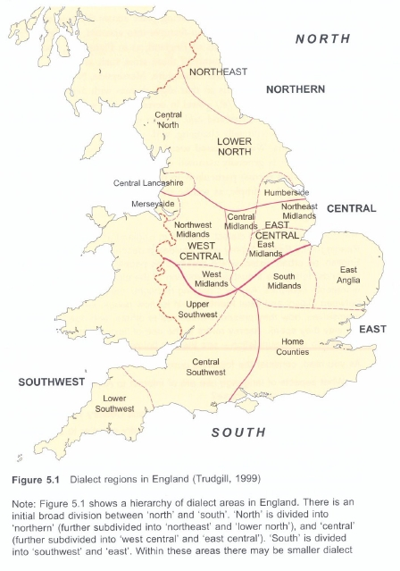

English in the UK
Englishes in the UK are separated by isoglosses (geographical dialectal boundaries). There has also been a 'Great Vowel Shift' that started in the 15th century.
Dialectal boundary - North and South
An important dialectal boundary runs through The Fens, a swampy area difficult to cross in the past.
South and North changes dialects independently.
Example: laugh, butter → laff, bootter (North) / laaf, baater (South)
Isoglosses
There are 16 isoglosses in the UK as shown below

Defining features
There are defining features of the 16 isoglosses that map dialect use across the UK.
| Area | Feature | Occurrence |
|---|---|---|
| Phonology | Pronouncing 'ng' finger rhymes with singer |
Lancashire, Merseyside, Northwest Midlands and West Midlands |
| Phonology | /a:/ all, ball, call sound like ahl, bahl, cahl |
Newcastle |
| Phonology | Great Vowel Shift, started in 1500. house → /haʊs/ (South), /hoose/ (North) |
Feature divides North (also Scotland) and South. |
| Phonology | laugh, butter → laff, bootter (North) / laaf, baater (South) | Division between North and South. |